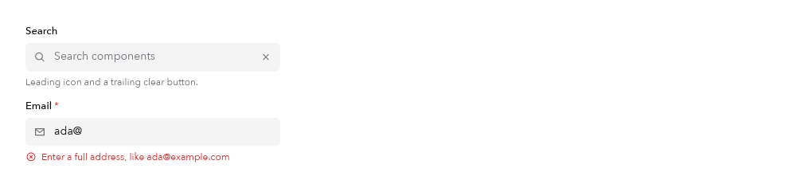

Components
Form inputs
The examples below come from the native Catalog. Preview images are rendered by the toolkit, not recreated in HTML. They do not demonstrate native input or desktop blur.
Radio group
01 / 10Mutually exclusive options with optional descriptions.

How to use Rust source
radio_group([(0, "Hobby"), (1, "Pro"), (2, "Team")])
.key("plan")
.selected(app.plan)
.on_select(|app: &mut App, p| app.plan = p)Catalog excerpt: names such as app, callbacks and helper functions belong to the example. View the complete source or start with the runnable app guide.
Number input
02 / 10Steppers clamp to the range; typed values are parsed and rounded.

How to use Rust source
number_input(app.weight).range(0., 20.).step(0.5).decimals(1).suffix(" kg")Catalog excerpt: names such as app, callbacks and helper functions belong to the example. View the complete source or start with the runnable app guide.
Combobox
03 / 10Type to filter, click or press Enter to choose.

How to use Rust source
combobox(items, &app.combo)
.key("framework")
.selected(app.framework)
.state(|app: &mut App| &mut app.combo)
.on_select(|app: &mut App, v| app.framework = Some(v))Catalog excerpt: names such as app, callbacks and helper functions belong to the example. View the complete source or start with the runnable app guide.
Tag input
04 / 10Enter adds the draft; × removes a tag; duplicates are ignored.

How to use Rust source
tag_input(&app.tags, &app.draft)
.key("tags")
.state(|app: &mut App| &mut app.draft)
.on_change(|app: &mut App, tags| app.tags = tags)Catalog excerpt: names such as app, callbacks and helper functions belong to the example. View the complete source or start with the runnable app guide.
Range slider
05 / 10Two thumbs; a press grabs the nearer one and they never cross.

How to use Rust source
range_slider(lo, hi).range(0. ..=200.).step(5.)
.on_change(|app: &mut App, lo, hi| app.price = (lo, hi))Catalog excerpt: names such as app, callbacks and helper functions belong to the example. View the complete source or start with the runnable app guide.
Colour picker
06 / 10Swatches, hue/saturation/lightness sliders and a hex field.

How to use Rust source
color_picker(app.colour.clone()).key("colour").on_change(|app: &mut App, hex| app.colour = hex)Catalog excerpt: names such as app, callbacks and helper functions belong to the example. View the complete source or start with the runnable app guide.
One-time code
07 / 10One field behind six boxes, so paste and backspace just work.

How to use Rust source
otp_input(app.code.clone(), 6).key("otp")
.on_change(|app: &mut App, c| app.code = c)
.on_complete(|app: &mut App, _| app.verified = true)Catalog excerpt: names such as app, callbacks and helper functions belong to the example. View the complete source or start with the runnable app guide.
Rating
08 / 10Click a star; click the current rating again to clear. Read-only without a handler.

How to use Rust source
rating(app.stars).key("stars").on_change(|app: &mut App, n| app.stars = n)Catalog excerpt: names such as app, callbacks and helper functions belong to the example. View the complete source or start with the runnable app guide.
Form fields and adornments
09 / 10Labels, descriptions, required marks and errors around any control.


How to use Rust source
form_field("Email", text_field(&app.email).leading_icon(Icon::Mail))
.key("email")
.required(true)
.error(validate(&app.email))Catalog excerpt: names such as app, callbacks and helper functions belong to the example. View the complete source or start with the runnable app guide.
Drop zone
10 / 10Native drag and drop. Extensions filter what is accepted.

How to use Rust source
drop_zone().key("drop").accept(["png", "jpg"])
.on_drop(|app: &mut App, paths| app.files = paths)Catalog excerpt: names such as app, callbacks and helper functions belong to the example. View the complete source or start with the runnable app guide.
Try it in the native Catalog
From the repository root. Static snapshots cannot demonstrate editing, keyboard focus, scrolling or animation.
cargo run --release --locked \
--features native-gpu,native-desktop \
--example catalog -- --page form-inputsAPI reference
Properties and behavior documented by this Catalog page.
| API | Behavior |
|---|---|
radio_group(items) | .selected / .descriptions / .horizontal / .on_select |
number_input(v) | .range / .step / .decimals / .suffix / .on_change |
combobox(items, &state) | .state(accessor) / .selected / .on_select |
tag_input(&tags, &state) | .max_tags / .placeholder / .on_change |
range_slider(lo, hi) | .range / .step / .on_change(lo, hi) |
color_picker(hex) | .swatches / .on_change(#RRGGBB); Hsl helpers |
otp_input(code, len) | .on_change / .on_complete |
rating(n) | .max / .size / .on_change |
form_field(label, control) | .description / .error / .required |
text_field(..).leading_icon / .trailing_action | Adornments inside the field. |
drop_zone() | .accept / .multiple / .on_browse / .on_drop |